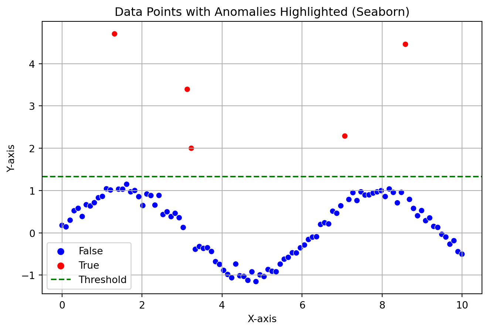

In this age where data is king, we are awash in a sea of big data, larger and more complex than ever before. Within this vast expanse of information lies a subtle yet critical challenge: the presence of anomalies. Think of anomalies as the rebels of the data world, defying the norms and expectations of typical behavior. These aren’t just quirky data points; they’re potential game-changers. They can skew our insights, open doors to cyber threats, and lead our carefully calibrated models astray. Identifying and understanding these anomalies isn’t just a technical puzzle; it’s a crucial quest to safeguard the integrity and efficacy of our data-driven universe. The ability to pinpoint and interpret these unusual patterns is more than a skill—it’s an essential armor in the arsenal of any data warrior navigating this ever-expanding digital landscape..
import seaborn as snsimport matplotlib.pyplot as pltimport numpy as npimport pandas as pdnp.random.seed(0)x = np.linspace(0, 10, 100)y = np.sin(x) + np.random.normal(0, 0.1, 100)# Introducing outliers/anomaliesy[np.random.randint(0, len(y), 5)] += np.random.normal(3, 1, 5)# Identifying the anomaliesthreshold = y.mean() +1* y.std()anomalies = y > thresholddata = np.column_stack((x, y))df = pd.DataFrame(data, columns=['X', 'Y'])df['Anomaly'] = anomalies# Plotting plt.figure(figsize=(8, 5))sns.scatterplot(x='X', y='Y', hue='Anomaly', data=df, palette={False: 'blue', True: 'red'})plt.axhline(y=threshold, color='green', linestyle='--', label='Threshold')plt.xlabel('X-axis')plt.ylabel('Y-axis')plt.grid()plt.title('Data Points with Anomalies Highlighted (Seaborn)')plt.legend()plt.show()

The plot showcases how a general anomaly can look like in a data distribution, these anomalies are separated by a threshold. If you look at the plot, it can be very evident that the outliers does not follow the actual pattern.
Machine Learning in Anomaly Detection
Machine learning excels in identifying patterns within datasets, a capability that proves especially useful in anomaly detection. By mastering the art of pattern recognition, machine learning models are not only able to discern regularities in data but also adeptly pinpoint anomalies—those instances that deviate from established norms. Today, I’ll introduce you to a particularly effective model designed for this purpose. This model simplifies the complex task of detecting outliers, leveraging advanced algorithms to efficiently identify deviations in any dataset, thus offering a robust solution for a variety of anomaly detection challenges.
DBSCAN
DBSCAN is a density based clustering algorithm which is really good for finding arbitary shaped clusters. Imagine you’re a detective looking at a bustling crowd, trying to identify groups of friends based on how closely they stand together. This is similar to how DBSCAN works with data points.
We will apply this algorithm to find out anomaly in the IRIS dataset. It has many repositories but the one from UCI Machine Learning Repository has two wrong data points.
We need to look at one parameter called epsilon (ε). Epsilon is like the detective’s line of sight, determining how far he can see around each point. Here we have ε = 0.5
First, maybe we can see if the model can really detect the two wrong data points. We can call them outliers or data anomaly.
As we can see, the model really could find out two wrong data points. You will see the DBSCAN model labelled them as -1. Just to be sure, we can plot the labels. In the image you can see our two outliers colored orange dots.
Now, the performance of the model can vary with different epsilon values. That is why, when trying to detect anomalies in your data, always look at the graphical representation of data clusters and anomalies to judge the model performance. Following is a plot showing the model output on three different epsilon values. We can compare the results because we know there are two outliers. As we can see, using ε = 0.1 and 0.7 gave us not ideal results. So, use your judgement always. Good Luck!